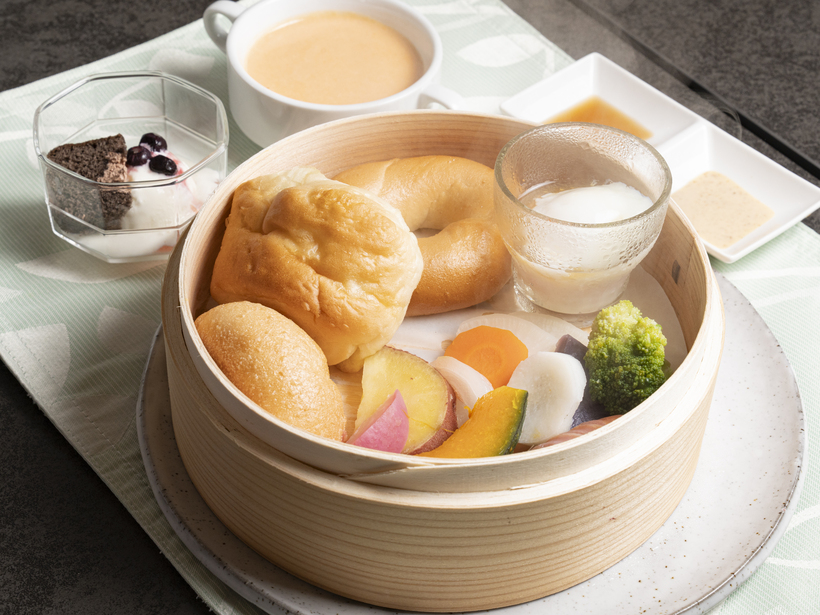

親不孝橋 × インターネット黎明期
本人は至って真面目です
- Windows95・IE推奨の公式ホームページ
- キリ番・BBS・工事中・管理人の部屋
- 親不孝橋と向新蔵の歴史を異様に詳しく紹介
- 実際の料理・店内写真を小さなサムネイルで掲載
ファイル： index.html（この比較ページ）／ seiro.html（A案）／ family.html（B案）／ retro.html（C案）
保存先： C:\Users\hidex\rupon-lp\ ・ 公開はしていません（noindex）